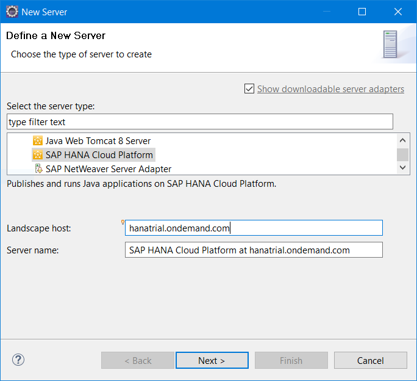

Debugging Applications on the Cloud
In this section, you can learn how to debug a Web application on SAP Cloud Platform depending on whether you have deployed it in the Eclipse IDE or in the console client.
Prerequisites
- You have developed a Web application using the Eclipse IDE. For more information, see Developing Java Applications.
- You have deployed your Web application either using the Eclipse IDE or via the console client. For more information, see Deploying and Updating Applications.
Note Debugging can be enabled if there is only one VM started for the requested account
or application.
Procedure
Applications Deployed from the IDE
- Deploy your Web application in the Eclipse IDE.
- Run your Web application on SAP Cloud Platform.
- Set breakpoints in your applications.
- From the application's context menu, choose
 Debug As
Debug As  Debug on Server
Debug on Server  .
. - The Debug perspective is opened.Note Since cloud servers are running on SAP JVM, switching modes does not require restart and happens in real time.
Applications Deployed with the Console Client
- Deploy your Web application in the console client and start it.
- Go to the Eclipse IDE, open the Servers view and
choose New Server .
- Choose SAP SAP Cloud Platform .
- Enter the correct landscape host, according to your location. (For more information, see Landscape Hosts.)
- Edit the server name, if necessary, and choose Next.

- On page SAP Cloud Platform Application in the wizard, provide the same application data which you have previously entered in the console client.
- Choose Finish.
- A new server is created and attached to your application. It should be in Started mode if your application is started.
- From the server's context menu, choose Restart in Debug. (This should not restart the application.)
- Request your application.
- Open the Debug perspective for your server.
- Set breakpoints in your application.
Note
- If you have deployed an application on a running server, we recommend that you do not use Debug on Server or Run on Server for this will republish (redeploy) your application.
- Also, bear in mind that if you have deployed two or more WAR files, only the debugged one will remain after that.
- If the sources are not attached (Example: The application is deployed
from CLI or you need to attach additional sources), you may attach them
as described here
 .
.
Related Information